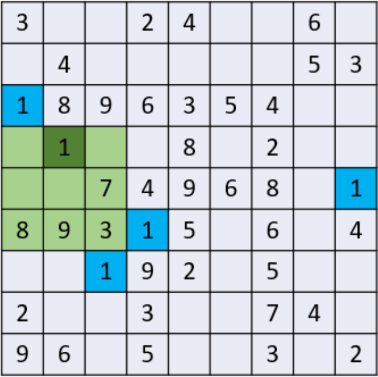
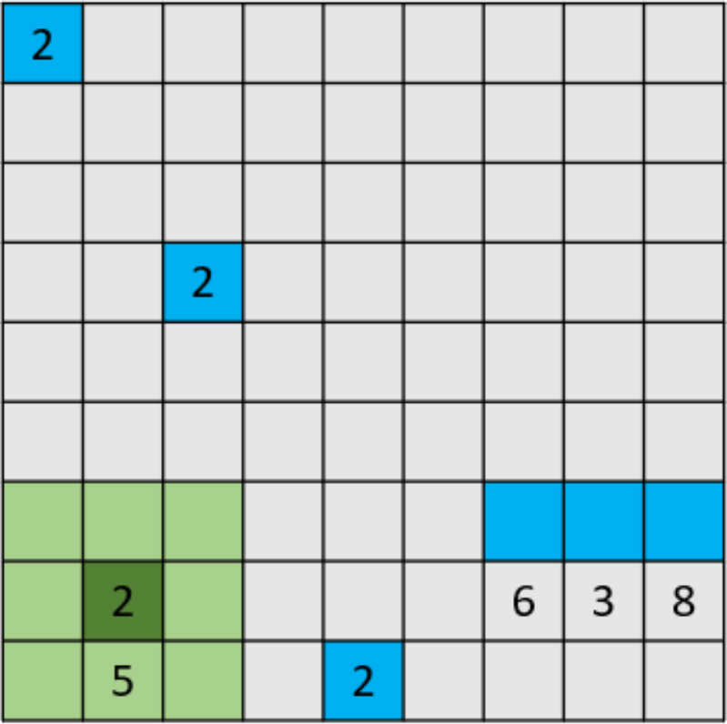
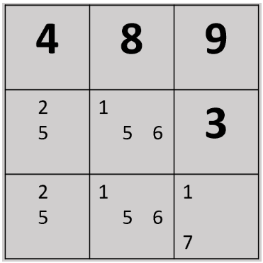
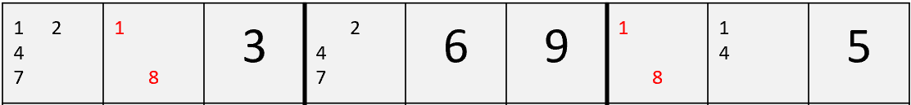
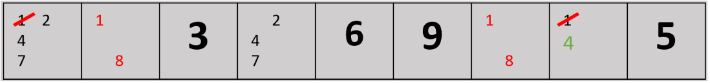
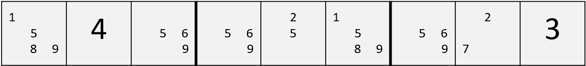
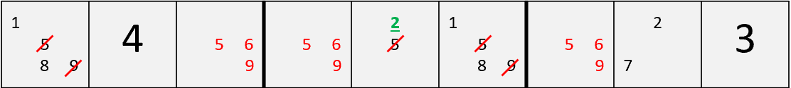
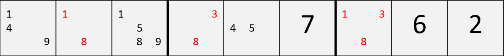

In the image below, the sub-grid highlighted in green must contain the number “1”.
* From the top left sub-grid, number “1” cannot be in column 1 of the highlighted sub-grid.
* From the bottom left sub-grid, number “1” cannot be in column 3 of the highlighted sub-grid.
* From the middle sub-grid, number “1” cannot be in row 3 of the highlighted sub-grid.
* From the middle right sub-grid, number “1” cannot be in row 2 of the highlighted sub-grid.
** Number 1 must be in the top middle postion of highlighted sub-grid
In the image below, a cross-hatch technique is being used to determine the position of the number “2”.
Notice that the position of the number “2” in the bottom right sub-grid is not known but it gives enough information to determine the position of the number “2” in the the highlighted sub-grid.
A hidden single is when a note is the only one of its kind in an entire row, column or block
In this case, only one cell has the possibility of a 7. Therefore, that cell must contain 7.
The same can be done across a row or down a column.
A disjoint subset works by looking for number possibilities that can be removed from other cells
For example, in this row, the possible numbers in each unfilled box can be written as {1247}, {18}, {247}, {18}, {14}
There are two boxes with the possibilities {18} (1 and 8)
This means that either one of the boxes contain 1 and the other 8
No other box in the row can contain 1 or 8
Here is another example with 3 numbers instead of 2
{1589}, {569}, {569}, {25}, {1589}, {569}, {27}
Three boxes only contain the numbers 5, 6 and 9
These numbers can be eliminated from the rest of the boxes
Here is another triple, but a little trickier
There are three cells which only contain three possible values (1, 3 and 8)
The numbers 1, 3 and 8 must be contained between these three cells
1, 3 and 8 can be removed as candidates from other cells
tip four
tip five
tip six
tip seven
tip eight
tip nine
tip ten